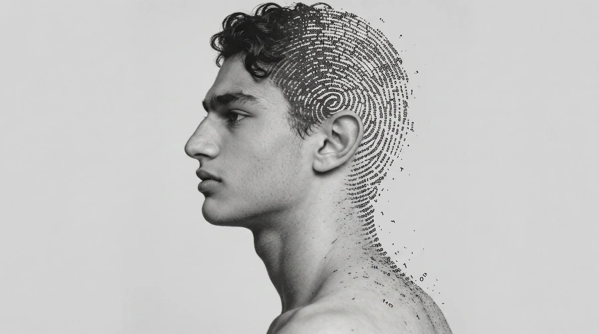
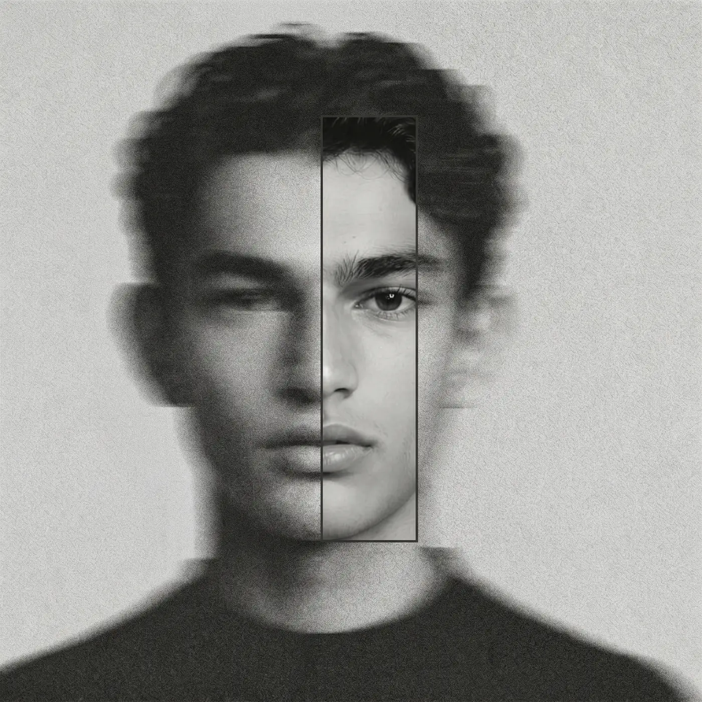
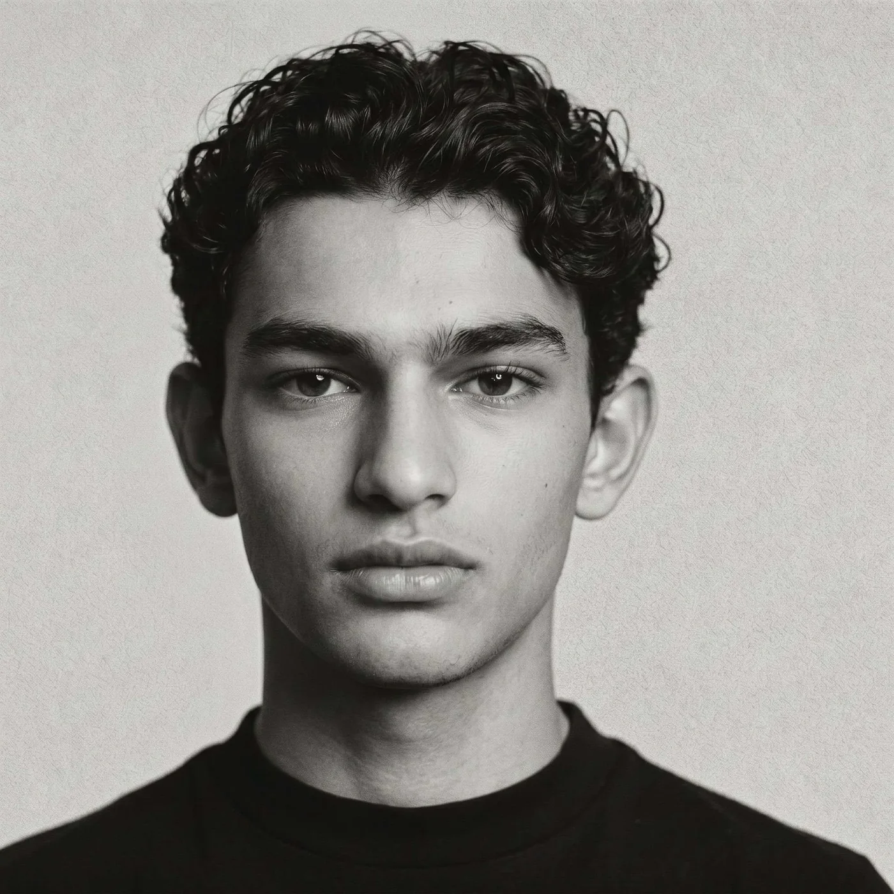
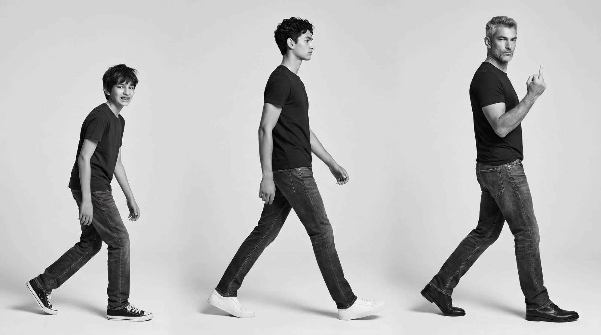
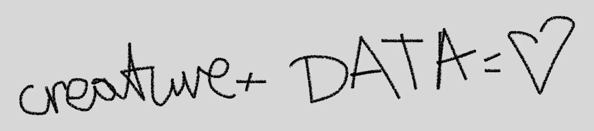
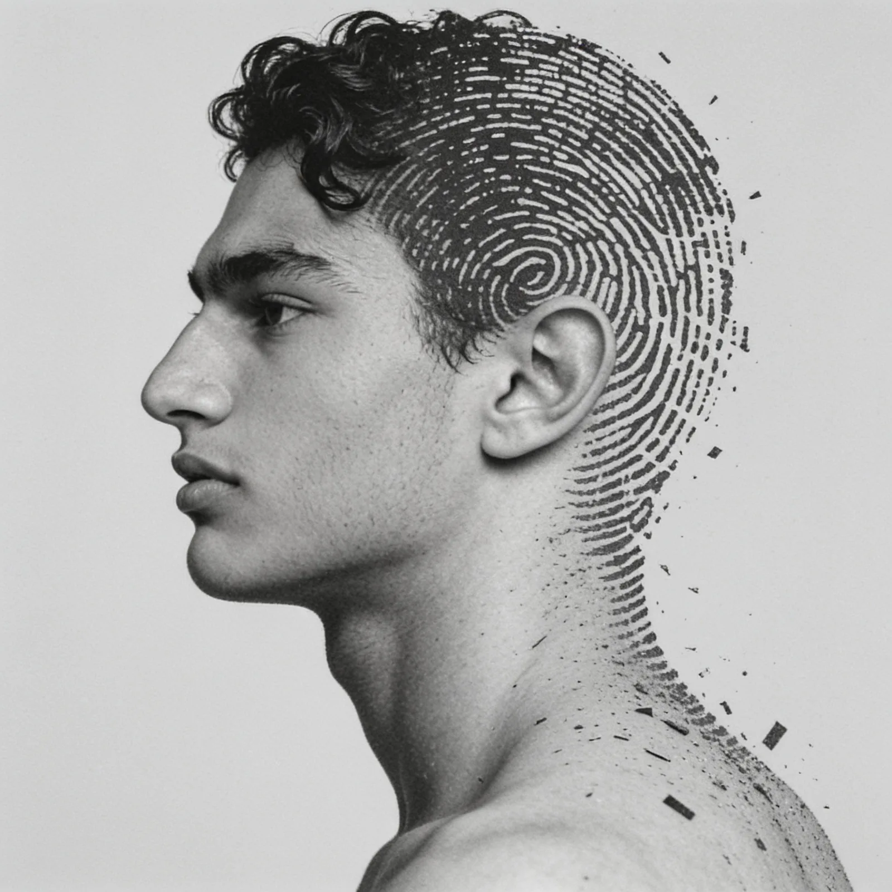

У вас уже есть почти всё, чтобы увидеть свой процесс по-настоящему. Система — это просто.


Каждый артикул оставляет след во времени. Система собирает данные из сессии и с платформы — и вот уже кардиограмма двух смен: я знаю, где, когда и почему теряется время.
Со временем вы всё лучше узнаёте свой ассортимент — и рассчитываете время съёмки точнее: сколько заложить на сложный артикул, а сколько на простой.


Лента карточек, варианты свайпом, комментарий сразу ко всей карточке. Решение фиксируется с именем и временем — без пересылки файлов.

Переименуйте, переместите — ничего не сломается. История каждого кадра сохраняется.
Система сопоставляет артикулы с карточками по визуальному сходству: загружаете PDF-каталог бренда с референсами, нажимаете «Расставить» — готово. После подтверждения все файлы переименовываются за секунды.
Загрузите реальный каталог — увидите весь процесс в одном месте уже на первом проекте.